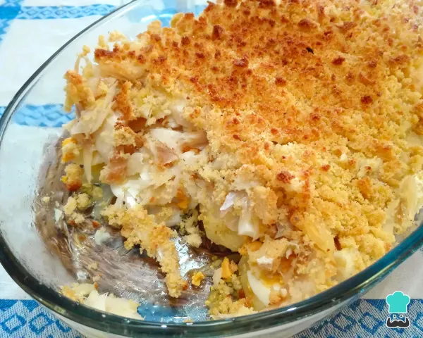

Cod With Cornbread

Description
Cod is that democratic fish that we usually reserve for entertaining the family on special occasions, such as Easter
and
Christmas. This oven-baked cod with cornbread recipe is perfect for these days, as it makes a lot and pleases
everyone!
Shredded cod with cornbread is a typically Portuguese recipe that you need to try, as it is simple to prepare and
very
delicious. The crust is made with cornbread, a type of cornbread with a dense crumb that provides a crunchy and
irresistible coating on this oven-baked cod!
Ingredients
- 1 kilogram of desalted cod
- 800 grams of potatoes
- 1 large cornbread (500g)
- 2 sliced onions
- 6 garlic cloves, sliced or minced
- 1/2 cup olive oil
- 2 bay leaves
- 3 egg
- salt
Steps
- To make this cod recipe in the oven, start by cooking the cod for 10-15 minutes in boiling water. In the same pan
or in
a separate pan, also cook the eggs and the potatoes, peeled and cut into slices, until they are soft but not falling
apart.
- When the cod is cooked, let it cool slightly and shred it, removing as many bones and skin as you can. Separately,
crumble the cornbread into a bowl, add 3 chopped garlic cloves and mix.
- Finally, prepare the stir-fry for this cod and cornbread recipe: in a frying pan with olive oil, add the bay
leaves,
onions and the remaining sliced or chopped garlic. Leave on medium-low heat, stirring occasionally, until the onion
becomes transparent. Turn off the fire.
- To prepare this recipe for cod with shredded cornbread, grease a large baking dish with olive oil and place the
potatoes
on top.
- Add the boiled and sliceed eggs and the boiled and shredded cod . Cover everything with the sautéed olive oil,
onion
and garlic (discard the bay leaves) and sprinkle the cornbread, to obtain a cornbread crust. Bake at 200ºC for 15-20
minutes or until the bread is golden.
- After the previous step, your cod with cornbread in the oven is ready to serve. Serve with a salad of your choice
and
tell us in the comments what you think of this Portuguese recipe. Enjoy!